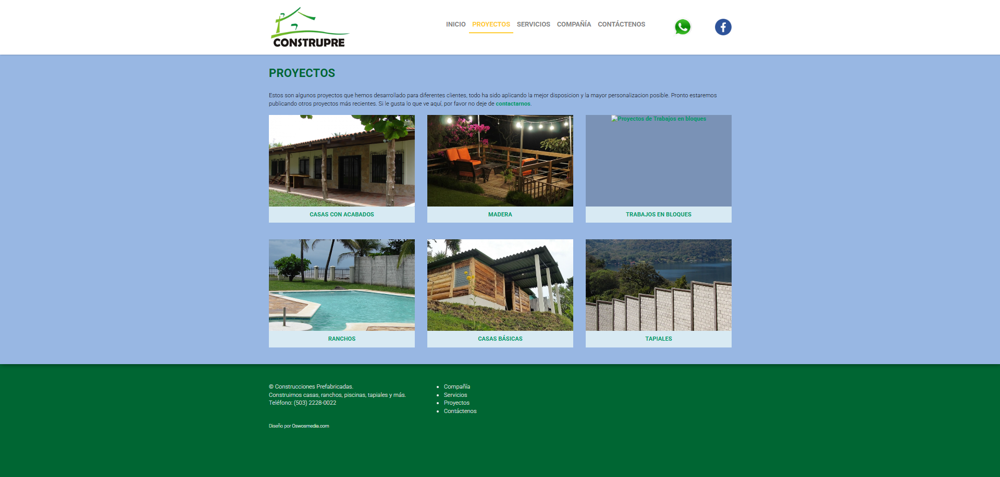
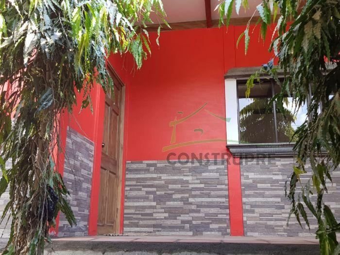
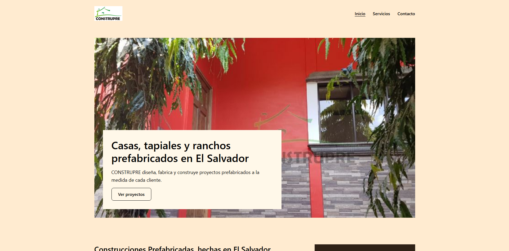

Desarrollo Web · 20255816
Guías de Desarrollo Web
Ejercicios y proyectos organizados por guía.
Guía 01
HTML, CSS y reto de IA
Páginas
Reto IA
Sitio original
construprefabricadas.com ↗

Comparación entre un prompt simple y uno detallado para modernizar el sitio de CONSTRUPRE.
Guía 02
Selectores CSS y reto de IA
Páginas
Reto IA
Estilo de Refero
Aspelin Reitan ↗

Nueva versión de CONSTRUPRE con tres páginas creadas con Gemini y un sistema visual inspirado en Refero.
Guía 03
Posicionamiento, visualización y maquetación
Páginas
Reto IA
Herramienta: Claude
CONSTRUPRE ↗

Nueva página de inicio de CONSTRUPRE generada con Claude. CSS Grid organiza sus seis secciones principales.
Guía 05